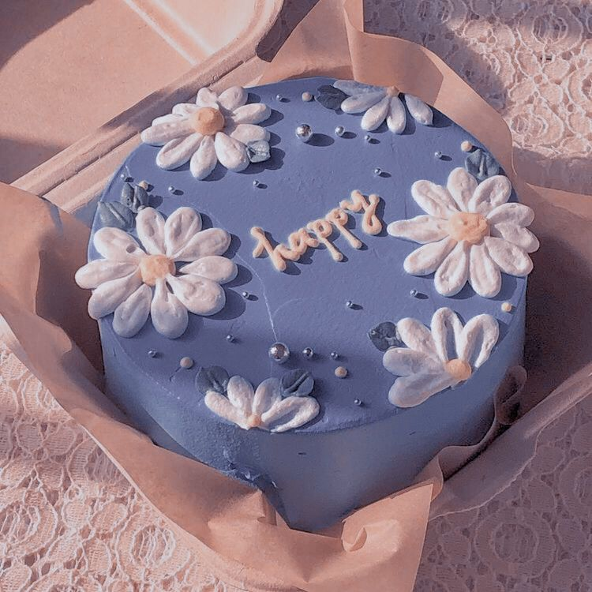

cake!

Simple cake. simple paragraph. so simple in fact that i am not using capital letters. will writing be useful
in the future? the future in which i am not sure exists? the future where i will hopefully not be doing this.
simple writing. i will never write a paragraph about cake. a thousand word essay in eigth grade about cake was
enough for me. i am done. cake is yum.
Ingredients
- 2 cups all-purpose flour
- 2 1/2 tsp baking powder
- 1/4 tsp salt
- 4 large eggs
- 1 1/2 cups white sugar
- 1/2 cup salted butter cut into cubes
- 1 cup milk
- 3 tsp vanilla
- 3 tsp oil
Steps
- preheat oven to 350f
- grease 2 8" cake pans and line with parchment
- whisk flour, baking powder, and salt in a bowl
- beat eggs for 30 sec
- pour sugar in over 45 sec
- beat for 7 min until tripled in volume and white
- place butter and milk in a heatproof container and microwave for 2 minutes do not let milk foam
- add flour to eggs in thirds and mix until the last bit is just mixed in
- add milk, vanilla, and oil into a bowl. add some egg batter and whisk until smooth
- slowly pour milk into the egg mixture
- scrape and mix until batter is smooth and pourable
- pour into pans and bake for 30 min or until golden